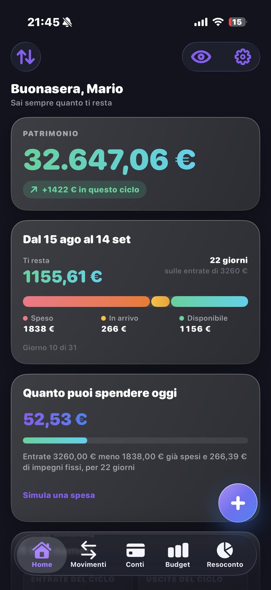
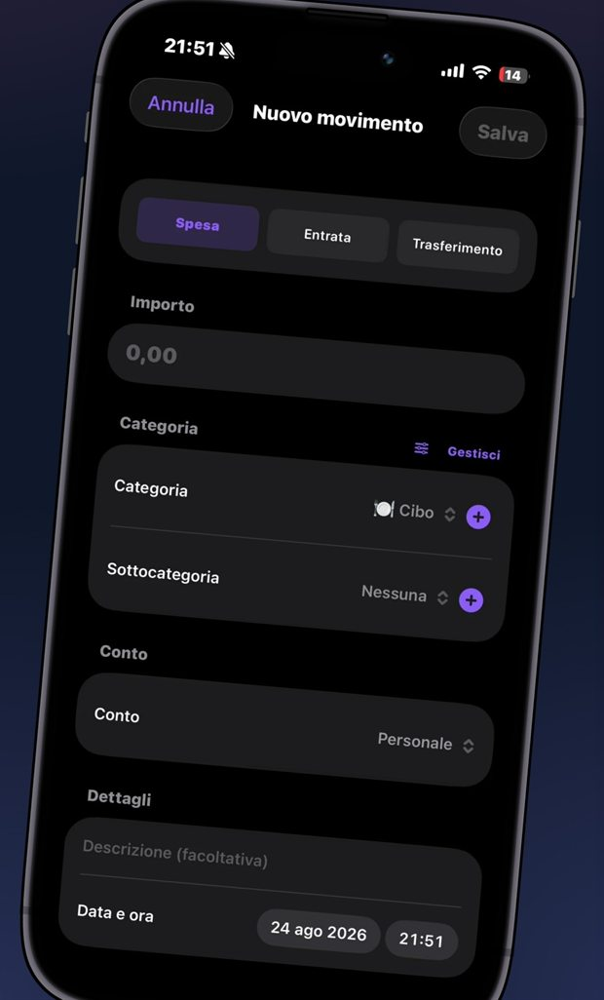
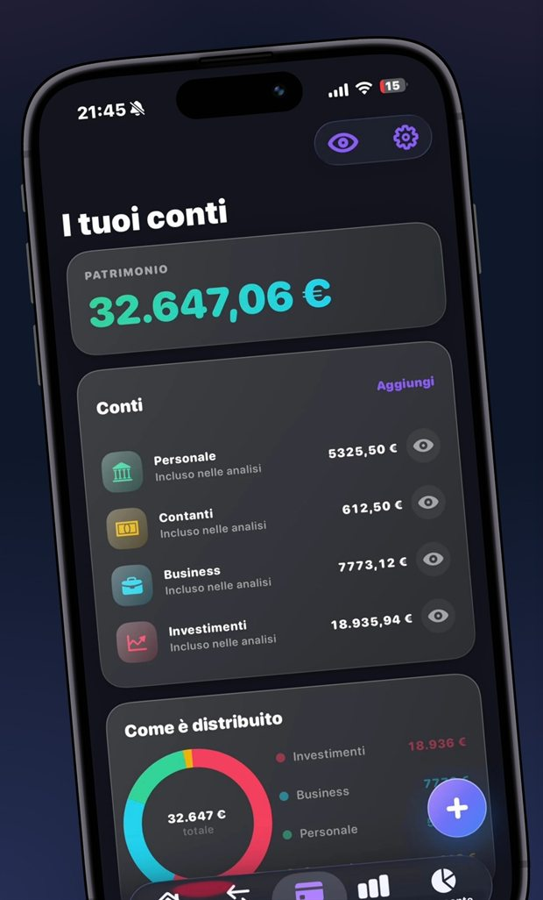
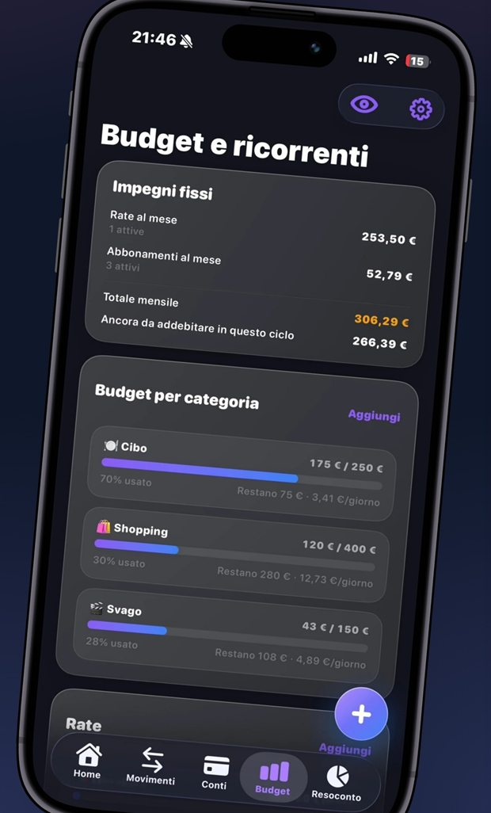
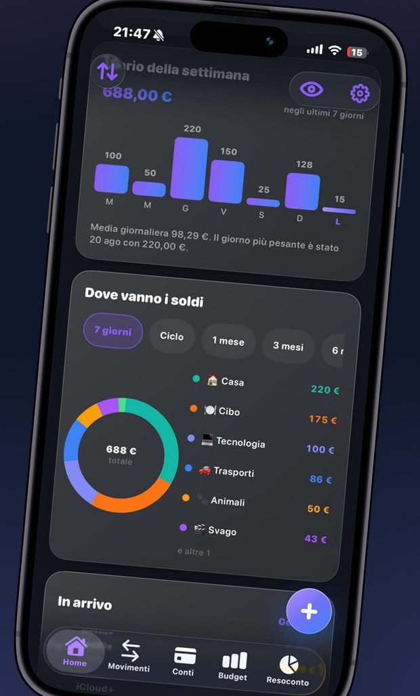
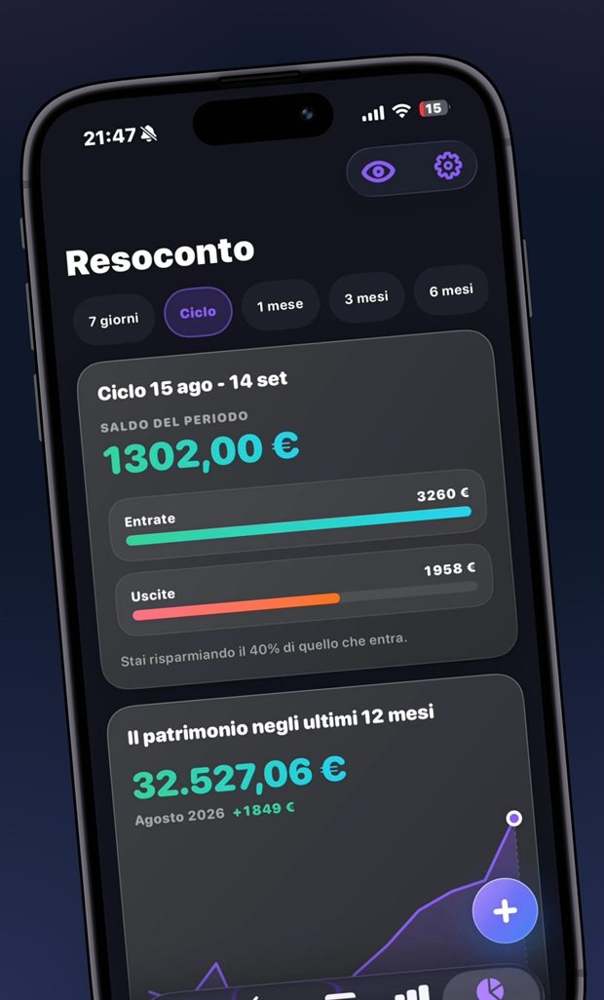

El mes del banco empieza el día 1. El tuyo empieza el día en que cobras. MoneyLeft lo calcula todo sobre tu ciclo: lo que ya has gastado, lo que está a punto de cargarse y lo que te queda de verdad de aquí al próximo cobro.
No se conecta a tu banco. Para usarla no hace falta registrarse: la cuenta sirve para sincronizar y para Pro.
Para iPhone con iOS 17 y, con la misma compra, también en Mac con chip de Apple y en Apple Vision Pro.

Todo lo que necesitas para no llegar al día 25 preguntándote dónde ha ido a parar el dinero — sin hojas de cálculo y sin darle a nadie las llaves de tu banco.
Una barra en tres tramos: lo que ya has gastado, lo que está a punto de cargarse y lo que te queda de verdad. Se actualiza con cada movimiento.
La cifra que importaConfiguras el día en que cobras y la app deja de razonar del 1 al 31. Presupuesto diario incluido: cuánto puedes gastar hoy.
Desde tu día de cobroSe registran solos el día del vencimiento, con un recordatorio antes del cargo. Si te quedas atrás, la app te propone los pendientes uno por uno.
Cargo automáticoUn tope por categoría y tus objetivos de ahorro, con el progreso siempre a la vista. Nada se bloquea: te dice cómo vas, no te riñe.
Categoría por categoríaEl patrimonio de los últimos doce meses y la previsión de los próximos doce, para recorrer con el dedo mes a mes. Con el punto más bajo bien a la vista.
Hacia atrás y hacia delanteLos datos están en un archivo en el dispositivo, protegido por el cifrado de iOS y por Face ID. Solo salen de ahí para la copia de seguridad en tu cuenta, si creas una, o cuando exportas una copia de seguridad.
Face ID incluidoEl patrimonio arriba, el ciclo en curso en el centro y, debajo, el diario de la semana. No tienes que buscar nada: lo que necesitas saber es lo primero que ves al abrir la app.
Veinticinco segundos, sin sonido.
Importe, categoría y listo. Los gastos se buscan por descripción o categoría, se filtran por tipo, y los programados aparecen como pendientes antes incluso de que llegue el día.

Cada cuenta con su icono y su color, y un único patrimonio que las suma todas. Puedes excluir una de los análisis sin borrarla: sigue ahí, simplemente no hace ruido en los cálculos.

El día del vencimiento el movimiento se crea solo y el saldo se actualiza, con un aviso que dice qué se ha registrado. Una cuota terminada sale de la lista activa y pasa a las completadas.

El reparto por categoría, la comparación con el periodo anterior y las señales que se leen en el ciclo en curso. Cifras sobre tus datos, no consejos genéricos sacados de un manual.

El patrimonio de los próximos doce meses, calculado según lo que sueles gastar en cada mes del año — no con una media plana. Desliza el dedo y ve mes a mes cuánto te alejas de hoy.

El plan gratuito no es una prueba con fecha límite: es la app, completa, para siempre. Pro añade la lectura de tus cifras a lo largo del tiempo.
Tus datos nunca quedan detrás de un pago. La exportación y la copia de seguridad siguen siendo gratis para siempre, y superar un límite no bloquea ni borra lo que ya has creado: solo impide crear cosas nuevas hasta que te pases a Pro. Si la suscripción caduca, los datos siguen intactos.
No, y no se puede aunque quieras. MoneyLeft no se conecta a ningún banco ni pide credenciales bancarias: los movimientos los introduces tú o los importas desde un archivo CSV. Es una decisión, no un límite técnico.
No. El plan gratuito funciona sin registro, y la guía inicial no te lo pide. La cuenta sirve para tener los mismos datos en varios dispositivos y para usar MoneyLeft Pro, que queda a nombre de tu cuenta.
Se quedan en tu dispositivo, en un archivo protegido por el cifrado de iOS. Si creas una cuenta, también se guarda una copia de seguridad en nuestro servidor, en Europa: te sirve para recuperarlo todo si cambias de teléfono, y con Pro para sincronizar tus dispositivos. Por lo demás, solo salen del teléfono cuando exportas una copia de seguridad adonde tú decidas. No vendemos datos a nadie y no hay ningún rastreo publicitario.
Sí, y sigue siendo gratis para siempre, incluso sin Pro. La exportación y la copia de seguridad completa están en Ajustes, en «Tus datos» (en la app, todavía en italiano: «Impostazioni › I tuoi dati»). La copia se puede restaurar en otro dispositivo.
A tus datos, nada: se quedan todos donde están. Solo se desactivan las funciones Pro, incluida la sincronización automática. Lo que ya habías creado por encima de los límites del plan gratuito no se borra.
Cualquier iPhone con iOS 17 o posterior. Si cambias de teléfono lo recuperas todo: con una cuenta, volviendo a iniciar sesión, o restaurando una copia de seguridad exportada.
MoneyLeft es una app para iPhone y, como tal, también se puede descargar en los Mac con chip de Apple (desde macOS 14) y en Apple Vision Pro (desde visionOS 1): la interfaz sigue siendo la del iPhone, en una ventana.
Te lo digo con sinceridad: en Mac y en Vision Pro la app está disponible, pero no la he probado personalmente, porque no tengo ni lo uno ni lo otro. En iPhone sí, en cada versión. Si la usas en un Mac o en un Vision Pro y algo no cuadra, escríbeme: es la forma más rápida de que se arregle.
Sí, y es la razón de ser de toda la app. Configuras el día en que cobras y cada cálculo — cuánto te queda, el presupuesto diario, el resumen del ciclo — se hace desde ese día hasta el siguiente, no desde el día 1 del mes.
MoneyLeft te dice cuánto te queda ahora, y cuánto te quedará dentro de un mes.
Descárgalo en elApp Store